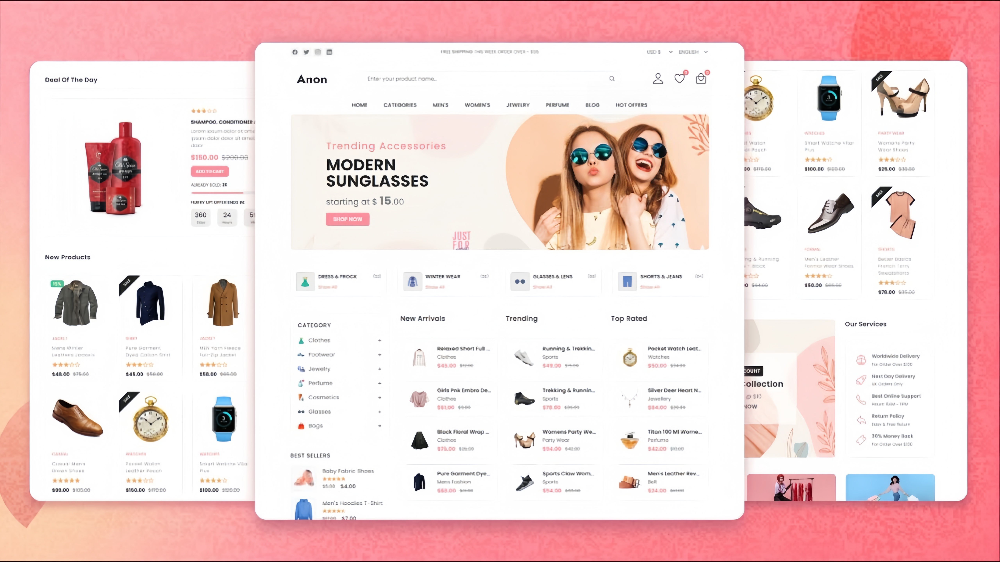

Membangun Sistem Desain dari Nol di Figma
Sebagai Front-End Developer, saya sering kali berinteraksi dengan desainer untuk menerjemahkan visual menjadi kode. Salah satu kunci keberhasilan proyek besar adalah adanya sistem desain yang solid. Artikel ini akan membahas langkah-langkah saya dalam membangun sistem desain dari awal menggunakan Figma, dan bagaimana hal itu sangat membantu proses pengembangan Front-End

>Mengapa Sistem Desain Penting?
Sistem desain adalah kumpulan komponen, pola, pedoman, dan alat yang dapat digunakan ulang untuk membangun produk digital. Bagi Front-End Developer, ini berarti konsistensi yang lebih baik, waktu pengembangan yang lebih cepat, dan mengurangi "debt" desain di kemudian hari. Ini adalah investasi yang sangat berharga.
Langkah 1: Audit Desain yang Ada
Sebelum membangun sesuatu yang baru, saya selalu memulai dengan mengaudit desain yang sudah ada (jika ada). Identifikasi komponen yang berulang, warna, tipografi, dan spasi yang sering digunakan. Ini membantu memahami kebutuhan dan potensi penghematan waktu.
Langkah 2: Menetapkan Prinsip Desain
Setiap sistem desain harus memiliki prinsip yang jelas. Misalnya, "Simplicity," "Consistency," atau "Scalability."
- Atomic Design: Memecah UI menjadi komponen terkecil (atom) hingga yang terbesar (template)
- Reusable Components: Setiap komponen harus dirancang agar bisa digunakan kembali di berbagai konteks
- Documentation: Selalu dokumentasikan setiap komponen, properti, dan panduan penggunaannya.
Dengan sistem desain yang terdefisisi dengan baik, kolaboraso antara desainer dan developer menjadi efisien.